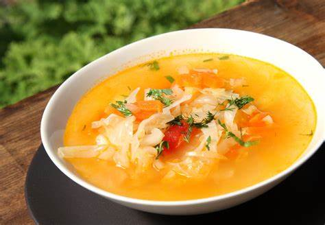
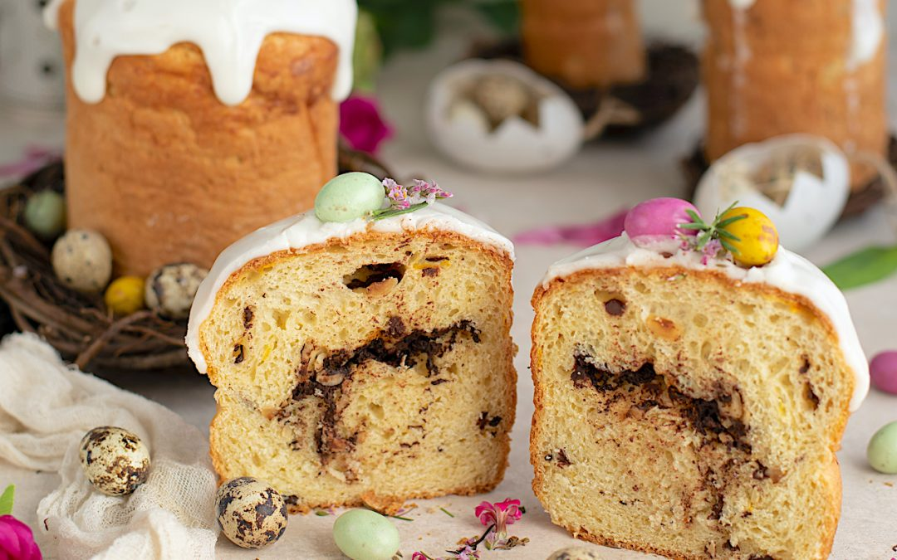

Gastronomia:
Para mas informacion vea Gastronomia de Rusia.
La gastronomía de Rusia es una rica amalgama de influencias geográficas, históricas y culturales que se ha desarrollado a lo largo de siglos. La vastedad del territorio ruso, que abarca desde Europa del Este hasta el Lejano Oriente, ha permitido la integración de una diversidad de ingredientes y tradiciones culinarias. Esta diversidad se refleja en la abundancia y variedad de los platos rusos, muchos de los cuales están diseñados para proporcionar calor y energía en las largas y frías temporadas invernales.
|  |
En la cocina rusa, las sopas ocupan un lugar fundamental, con una variedad de recetas que van desde las ligeras hasta las más sustanciosas. Una de las sopas más emblemáticas es el borscht, una sopa de remolacha que se sirve caliente y se acompaña con crema agria. Otra sopa popular es el shchi, hecha de repollo y que puede servirse caliente o fría, dependiendo de la temporada. Además, el okroshka es una sopa fría a base de kvass, una bebida fermentada de pan de centeno, que se mezcla con vegetales crudos y carne. Estas sopas no solo son nutritivas sino que también representan la hospitalidad y la riqueza de la cocina casera rusa. |
Los platos principales de la gastronomía rusa son igualmente variados y a menudo consisten en carnes, pescados y aves. El pelmeni, similar a los raviolis, es un plato muy popular que consiste en pequeñas empanadillas rellenas de carne y servidas con crema agria. El stroganoff, tiras de carne cocidas en una salsa de crema agria, es otro plato que ha ganado fama internacional. Los golubtsy, hojas de col rellenas de carne y arroz, cocinadas en una salsa de tomate, son un ejemplo de cómo la cocina rusa utiliza ingredientes simples para crear platos llenos de sabor. Además, los pescados ahumados, como el salmón y el esturión, son muy apreciados, y el caviar, especialmente el caviar negro de esturión, es uno de los productos rusos más conocidos en todo el mundo.
El pan es un alimento básico en la dieta rusa, con el pan de centeno (borodinsky) siendo uno de los más populares. Los blinis, similares a los crepes, son una parte integral de la cocina rusa y se pueden servir con una variedad de rellenos dulces y salados, como caviar, crema agria, mermelada o miel. Los cereales, conocidos como kasha, son comunes en el desayuno y se pueden hacer de trigo sarraceno, avena o arroz, y se sirven a menudo con mantequilla o leche.
Las bebidas tradicionales rusas incluyen una variedad de infusiones y fermentados. El té es la bebida caliente más común y se sirve a menudo con mermelada de frutas o miel. El kvass, una bebida fermentada a base de pan de centeno, es refrescante y ligeramente alcohólica. El vodka, la bebida alcohólica más famosa de Rusia, se consume en numerosas ocasiones y se considera un símbolo nacional. Además, el medovukha, una bebida fermentada a base de miel, es una bebida tradicional que se remonta a tiempos antiguos.
Los postres y la repostería en Rusia son ricos y variados, con influencias tanto de las cocinas europeas como asiáticas. Los pasteles y tartas suelen ser elaborados y a menudo incluyen frutas, nueces y crema. El pirog es una empanada que puede ser dulce o salada, rellena de carne, pescado, vegetales o frutas. La tarta de miel (medovik) y la tarta Napoleón son postres populares que reflejan la influencia europea en la cocina rusa. Otro dulce tradicional es el pryaniki, una especie de pan de jengibre.
|
La gastronomía rusa también está profundamente entrelazada con sus festividades y tradiciones. Durante la Maslenitsa, la semana anterior a la Cuaresma ortodoxa, se consumen grandes cantidades de blinis para simbolizar el adiós al invierno. La Pascua ortodoxa es celebrada con la preparación de kulich (pan dulce de Pascua) y paskha (postre a base de queso). Estas celebraciones no solo son momentos de indulgencia culinaria, sino también de preservación y celebración de las tradiciones culturales rusas. |
 |
En resumen, la gastronomía rusa es una expresión de su rica historia y su vasta geografía. Con una base en ingredientes locales y técnicas tradicionales, ha sabido incorporar influencias extranjeras y adaptarse a las condiciones climáticas, creando una cocina robusta y variada que satisface tanto el cuerpo como el alma.